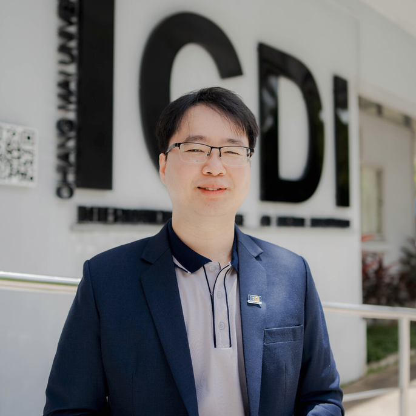

2017 — 2022
Doctor of Philosophy in Mathematics
University of Missouri, Columbia
Dissertation: Partial Connections and Contact Instantons on Contact Manifolds
Advisor: Prof. Shuguang Wang
// mathematics · digital innovation · blockchain
Lecturer at the International College of Digital Innovation, Chiang Mai University. My academic work spans mathematics, blockchain systems, and Bitcoin.

Conference proceeding
X. He & N. Udomlertsakul · DIFT 2026-1, pp. 38–52
Conference proceeding
M. Peng & N. Udomlertsakul · DIFT 2026-1, pp. 24–37
Poster
CMU Annual Research Summit 2025 · Poster presentation
Conference proceeding
L. Li & N. Udomlertsakul · DIFT 2025-2, pp. 1–12
Conference proceeding
H. Jiao, N. Udomlertsakul & A. Tamprasirt · 8th TICC International Conference
Conference proceeding
X. Li & N. Udomlertsakul · 8th TICC International Conference, pp. 138–146
Journal article
N. Udomlertsakul & S. Wang · Journal of Geometry and Physics, Vol. 187
Journal article
N. Udomlertsakul & S. Suantai · Interdisciplinary Research Review, 11(2), 8–12
Doctor of Philosophy in Mathematics
Dissertation: Partial Connections and Contact Instantons on Contact Manifolds
Advisor: Prof. Shuguang Wang
Master of Science in Mathematics
Bachelor of Science in Mathematics
Independent study in fixed point theorems for multivalued mappings.
Advisor: Prof. Suthep Suantai